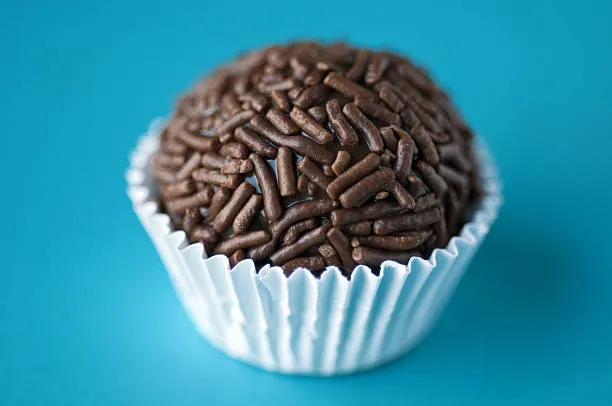

Receitas de sobremesas e afins
Receitas para quem é iniciante
Aprenda a fazer sobremesas deliciosas e fáceis de preparar. Aqui você encontra receitas de bolos, tortas, doces e muito mais. Surpreenda sua família e amigos com essas delícias!
Brigadeiro

Ingredientes:leite condensado, chocolate em pó, manteiga, granulado.
Modo de preparo
- Em uma panela, misturar o leite condensado, chocolate em pó e manteiga.
- Cozinhar em fogo baixo, mexendo sempre, até desgrudar do fundo da panela.
- Deixar esfriar, enrolar e passar no granulado.
- Servir em forminhas.
dica:
Você pode adicionar chocolate granulado ou coco ralado por cima para dar um toque especial.
Pudim de leite condensado
Ingredientes:leite condensado, leite, ovos, açúcar.
Modo de preparo
- Bater todos os ingredientes no liquidificador.
- Caramelizar uma forma com açúcar e despejar a mistura.
- Cozinhar em banho-maria por cerca de 1 hora.
- Deixar esfriar e desenformar.
-
dica:
- Você pode adicionar essência de baunilha ou chocolate na mistura para dar um sabor diferente.